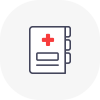
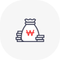
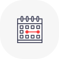

검진 절차
2021년 일반건강검진 안내문-
1
대상자 선정 (국민건강보험공단)
일반건강검진 대상자 : 지역세대주, 직장가입자, 만20세이상 세대원과 피부양자, 만19세~64세 의료급여수급권자
※매 2년마다 1회, 비사무직은 매년 실시
- 2 건강검진표 발송 및 수령 (국민건강보험공단)
일반건강검진 대상자 : 지역세대주, 직장가입자, 만20세이상 세대원과 피부양자, 만19세~64세 의료급여수급권자
지역가입자는 주민등록 주소지로 우편 발송해 드립니다.
·공단에 실거주지 등록이 되어있거나, NAVER 전자문서 서비스를 이용하는 경우 해당 경로로 발송해 드립니다.
- 3 검사항목 공통 검사항목
- 진찰, 상담, 신장, 체중, 허리둘레, 체질량지수, 시력, 청력, 혈압측정
- AST(SGOT), ALT(SGPT), 감마지티피
- 공복혈당
- 요단백, 혈청 크레아티닌, 혈색소, 신사구체여과율(e-GFR)
- 흉부방사선촬영
- 구강검진
성·연령별 검사 항목- 이상지질혈증(총콜레스테롤, HDL콜레스테롤, LDL콜레스테롤, 트리글리세라이드)
※남자 만24세 이상, 여자 만40세 이상, 4년 주기(남자 만24세, 28세, 32세..., 여자 만40세, 44세, 48세...만 해당) - B형간염검사(만40세, 보균자 및 면역자는 제외)
- 치면세균막검사(만40세)
- 골다공증(만54·66세 여성)
- 정신건강검사_우울증(만20·30·40·50·60·70세)
※해당 연령을 시작으로 10년동안 1회 - 생활습관평가(만40·50·60·70세)
- 노인신체기능검사(만66·70·80세)
- 인지기능장애검사(만66세 이상 2년에 1회)
※만66세 이상, 2년 주기(만66세, 68세, 70세...만 해당)
- 4 일반건강검진 결과 통보 (검진기관)
- 일반건강검진 후 15일 이내 검진기관에서 문진표에 작성한 주소지(우편, 메일)로 발송
- 건강위험평가(HRA)
- 5 확인검사 (병의원) 질환의심자에 한 함
- 일반건강검진 결과 고혈압·당뇨병 질환의심자는 일반건강검진결과표와 신분증을 지참하고 가까운 병·의원 (상급종합병원 및 종합병원 제외)에서 확진검사 및 진료 실시 (의료급여수급권자는 의료전달체계에 따라 가까운 의원에서 실시)
- 일반건강검진 결과 폐결핵 질환의심자는 일반건강검진결과표와 신분증을 지참하고 가까운 병·의원에서 확진검사 및 진료 실시
- 확진검사항목
- 가. 고혈압 : 진찰 및 상담, 혈압측정
- 나. 당뇨병 : 진찰 및 상담, 공복혈당검사
- 다. 폐결핵 : 진찰 및 상담, 객담검사
필수 확인사항
-
건강검진 전 주의사항
- 검진 전날 저녁 9시 이후에는 금식하시기 바랍니다.
- 검진 당일 아침 식사는 물론 물, 커피, 우유, 담배, 주스, 껌 등 일체의 음식을 삼가야 합니다.
- 되도록 오전 중에 검진을 받되, 오후에 검진받으실 분은 검사 전
최소 8시간 이상의 공복상태를 유지해야 합니다. (공복이 아닌 상태에서 검진 시 검사결과가 다르게 나타날 수 있음)
-
운전면허 적성검사 간소화 서비스
운전면허 신청일 이전 2년 내 국가건강검진을 받은 사람은 운전면허 발급·갱신 시 신체검사(시력·청력) 면제가 가능합니다.
※단, 검진기관에서 검진청구하여 정산완료된 자료에 한함)
-
검진기간 안내 : 매년 1.1. ~ 12.31. (확진검사는 다음연도 1.31까지)
-
일반건강검진의 검진기간은 매년 12.31.로 종료
되며 검진기간연장은 없습니다.
다만 전년도 미수검자가 공단에 요청 시 금년도 검진대상으로 추가등록은 가능합니다. - 성, 연령별 검사항목은 해당하는 자에 한하여 당해년도만 검사할 수 있습니다.(③번 성·연령별 검사항목 참조)
-